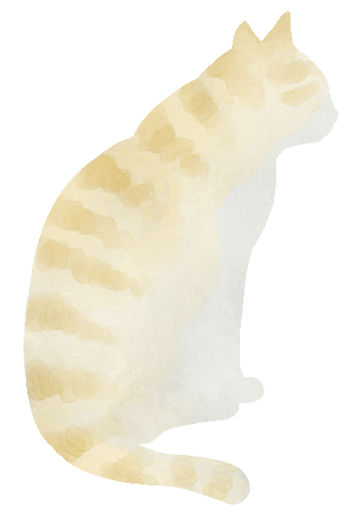
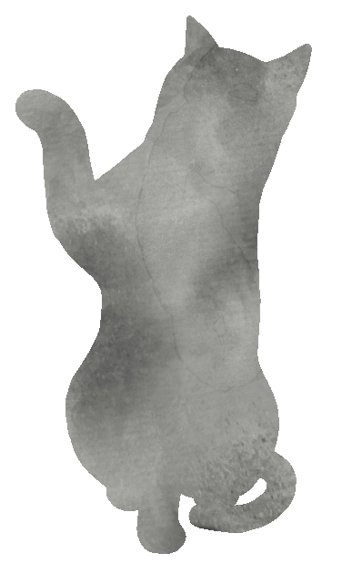

審神者の道具箱

資源帳
木炭・玉鋼・冷却材・砥石などの
資源や道具を
記録・管理するツールです。
推移をグラフで確認できます。
道具を開く →

稽古録
刀剣男士の
レベルと累積経験値を
記録・管理するツールです。
グラフで確認できます。
道具を開く →
マ ニ ュ ア ル
📖
資源帳マニュアル
各機能の詳しい使い方・説明
開く →
📖
稽古録マニュアル
各機能の詳しい使い方・説明
開く →
最新更新
2026.04.25
最新
▼
資源帳
期間メモをグラフで選択強調できるように
その他軽微な改修
稽古録
期間メモ・日メモのUI刷新
刀種複数選択に対応
PCヘッダー刷新（同期ボタン・ログアウト・最終同期時刻）
クラウド同期・グラフ操作の改修（試運転中）
＊ 説 明 書 ＊
📖 このアプリについて
ゲーム内のデータを自動取得することはありません。
"全て審神者本人の手入力"
によって記録していくツールです。
💾 データの保存について
データはお使いの端末のブラウザ内にのみ保存されます。
管理人がデータを確認・アクセスすることは
一切ありません
のでご安心ください。
Googleドライブ同期はバックアップの一つとしてご利用ください。
※「イベント・メモのデータ」と「グラフのデータ」は
別の場所
でそれぞれインポート・エクスポートされます。
⚠ バックアップのお願い
エクスポートまたはGoogleドライブ同期で、
定期的なバックアップを必ず行ってください。
🔄 ツール間の互換性
「イベント・メモのデータ」は
資源帳・稽古録で共通
して使えます。
一方のアプリでエクスポートしたデータを、もう一方にインポートすることが可能です。
📊 資源帳 — Excelデータの読み込み
これまでExcelに記録していた資源データをグラフに取り込める場合があります。
「設定」の下部に「Excel 読み込みについて」の説明があります。
「データ一覧」タブから「Excel読み込み」を実行できます。
※必ず読み込めるわけではありません。
🌐 推奨ブラウザ
PC：Chrome / Edge / Firefox
スマートフォン：Chrome / Firefox / Safari
⚠ アプリ内ブラウザ（WebView）をお使いの方へ
SNSアプリなどのアプリ内ブラウザでは、Googleドライブとの同期が動作しません。
（Googleのセキュリティポリシーによる制限です）
同期を使う場合は上記の推奨ブラウザからアクセスしてください。
同期の代わりに「データ一覧」タブのインポート・エクスポート機能もご活用ください。
＊ 更 新 情 報 ＊
2026.04.25
最新
▼
資源帳
期間メモをグラフで選択強調できるように
その他軽微な改修
稽古録
期間メモ・日メモのUI刷新
刀種複数選択に対応
PCヘッダー刷新（同期ボタン・ログアウト・最終同期時刻）
クラウド同期・グラフ操作の改修（試運転中）
2026.04.24
▼
「イベント・キャンペーン」→「期間メモ」に名称変更
「メモ」→「日メモ」に名称変更
グラフ表示を三種類から選べるようになりました（設定・グラフ内ボタンで切替）
グラフで期間メモを選択して強調できるようになりました
グラフの日付形式を切り替えできるようになりました
期間メモ・日メモのプリセット表示を改善しました
2026.04.23
▼
イベント機能の表現を「イベント・キャンペーン期間機能」に変更
キャンペーン名をプリセットに追加
推奨環境を説明書に追加
誤字を修正
現在、サイトの整備（説明書・案内の追加）を行っています。
それに伴い、メールフォームは一時休止中です。再開は未定です。
すべてのご連絡・ご要望にお応えできるわけではありませんのでご了承ください。
過去の更新を見る
▼
2026.04.22
▼
メールフォームを設置しました
資源帳の遠征データを同期対象に追加
稽古録でクラウド同期時に自動読み込みされる不具合を修正
2026.04.21
▼
稽古録に柏太刀のデータを追加
稽古録の同期まわりを確認中（警告は設定から有効・無効を切替可能）
近日メールフォームを追加予定